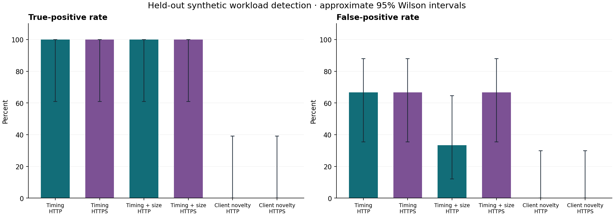
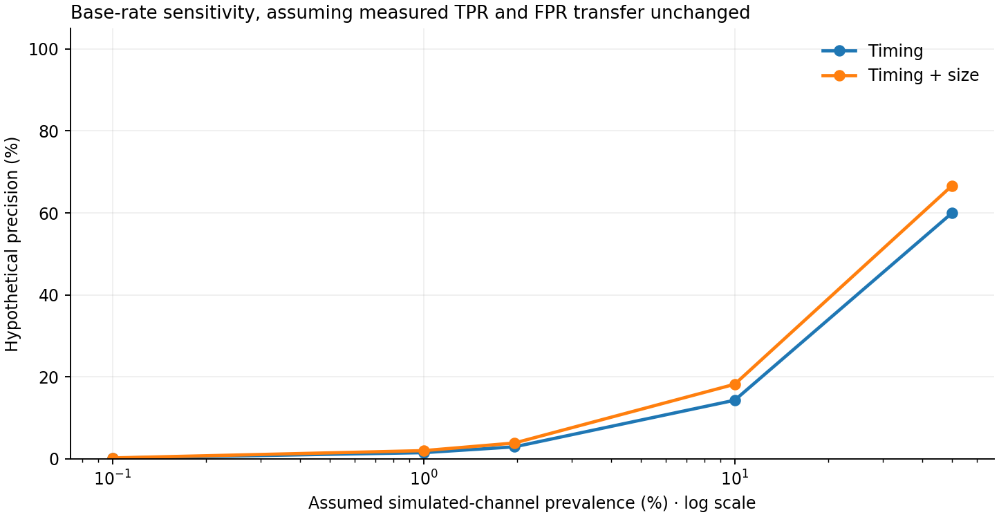

What do simple network rules
actually distinguish?
A reproducible pilot comparing synthetic channel traffic with benign periodic HTTP/S clients.
Evidence and provenance
Actual loopback HTTP/S traffic was observed by an active transparent TCP forwarder. These are socket-level stream observations, not passive packet captures. Byte counts include TCP payload and TLS records, not TCP/IP headers. No PCAP was captured for this experiment.
Rules were selected on development runs and frozen before held-out traffic collection. Each completed run is one fixed-duration client–destination window. The first qualifying prefix creates at most one alert.
Configured minimum for timing-rule prefixes: 6 completed connections. The supplied pilot used 6 as an untuned default; no sensitivity sweep has been performed. This gate can affect TPR, FPR, coverage, and delay. Client novelty does not use this gate.
Observation backend: tcp_stream_proxy ·
Failed runs excluded: 0
Held-out results
| Detector | Transport | Scored / total | TP / FN | FP / TN | TPR | FPR | Precision | Median detection (s) |
|---|---|---|---|---|---|---|---|---|
| Timing | HTTP | 15/15 | 6 / 0 | 6 / 3 | 100.0% | 66.7% | 50.0% | 0.61 |
| Timing | HTTPS | 15/15 | 6 / 0 | 6 / 3 | 100.0% | 66.7% | 50.0% | 0.60 |
| Timing + size | HTTP | 15/15 | 6 / 0 | 3 / 6 | 100.0% | 33.3% | 66.7% | 0.61 |
| Timing + size | HTTPS | 15/15 | 6 / 0 | 6 / 3 | 100.0% | 66.7% | 50.0% | 0.60 |
| Client novelty | HTTP | 15/15 | 0 / 6 | 0 / 9 | 0.0% | 0.0% | N/A | N/A |
| Client novelty | HTTPS | 15/15 | 0 / 6 | 0 / 9 | 0.0% | 0.0% | N/A | N/A |
N/A means the feature or denominator is unavailable—not zero. Coverage must be considered alongside detection rates.


Uncertainty and alert burden
| Detector · both transports | TPR · 95% interval | FPR · 95% interval | False alerts / benign client-hour | Precision at assumed 1:50 |
|---|---|---|---|---|
| Timing | 75.8–100.0% | 43.7–83.7% | 1200.00 | 2.9% |
| Timing + size | 75.8–100.0% | 29.0–71.0% | 900.00 | 3.8% |
| Client novelty | 0.0–24.2% | 0.0–17.6% | 0.00 | N/A |
Intervals are approximate Wilson intervals per independent run. The accelerated pilot's client-hour rates are normalized measurements, not forecasts of production alert volume. A zero observed FPR can still have a wide interval.
Base-rate sensitivity
Change the assumed ratio below. This calculation holds the measured TPR/FPR constant and is a hypothetical scenario, not a claim about a real network.
Precision = TPR × prevalence / [TPR × prevalence + FPR × (1 − prevalence)].
Where the combined rule succeeds or fails
| Workload | Transport | Ground-truth class | Scored / total | Flagged fraction |
|---|---|---|---|---|
| channel_regular | HTTP | simulated channel | 3/3 | 100.0% |
| channel_variable | HTTP | simulated channel | 3/3 | 100.0% |
| health_check | HTTP | benign | 3/3 | 100.0% |
| monitor_heartbeat | HTTP | benign | 3/3 | 0.0% |
| update_check | HTTP | benign | 3/3 | 0.0% |
| channel_regular | HTTPS | simulated channel | 3/3 | 100.0% |
| channel_variable | HTTPS | simulated channel | 3/3 | 100.0% |
| health_check | HTTPS | benign | 3/3 | 100.0% |
| monitor_heartbeat | HTTPS | benign | 3/3 | 100.0% |
| update_check | HTTPS | benign | 3/3 | 0.0% |
For simulated channels, flagged fraction is recall. For benign workloads, it is a false-positive rate. The same held-out benign set supports comparison of the two simulated timing conditions.
Frozen model
Timing and request-size variation are the only numeric predictors. IP addresses, ports, payload markers, profile names, and absolute timestamps are excluded from the prediction rules.
Show exact model and development run IDs
{
"schema_version": 1,
"training_run_ids": [
"r51877e4a294d2956",
"r37b0bf026665a016",
"rf123b3b9fe66f172",
"r3cf5a743afd06a2f",
"r5b4a77005104214f",
"r5f114d466c957441",
"r3ebead9541f0abdd",
"r773b202edecf6301",
"rdd74b8308d633277",
"r4a4724bf7d64313d",
"r29546a95eb6099c5",
"r1639dffff89fa6f2",
"r744313d2d875c424",
"ree39ee03d78a925f",
"r40d5843cb27fc656",
"r2da472d6c42aa793",
"rb21ee1acf4dfe8bc",
"r5f6d31d436bc30c1",
"rfe4ce6d425104026",
"rdc538e036b509570"
],
"training_split": "development",
"selection": "maximize development balanced accuracy; ties prefer lower FPR; never-alert fallback",
"evaluation_policy": "first qualifying causal prefix; at most one alert per run",
"numeric_feature_allowlist": [
"interval_cv",
"request_size_cv"
],
"grid": {
"interval_cv_max": [
0.0,
0.03,
0.06,
0.1,
0.2,
0.35,
0.5,
0.8,
1.2
],
"request_size_cv_max": [
0.0,
0.01,
0.03,
0.06,
0.1,
0.2,
0.4,
0.8
]
},
"rules": {
"timing": {
"kind": "timing",
"interval_cv_max": 0.35,
"development_balanced_accuracy": 0.6666666666666667,
"development_fpr": 0.6666666666666666
},
"timing_and_size": {
"kind": "timing_and_size",
"interval_cv_max": 0.35,
"request_size_cv_max": 0.06,
"development_balanced_accuracy": 0.75,
"development_fpr": 0.5
},
"client_novelty": {
"kind": "client_novelty",
"known_benign": {
"ja3": [
"dbb158bbf02cb040164d288c9b1d8492"
],
"user_agent": [
"BeaconLab-ResearchClient/1.0"
]
}
}
},
"frozen_utc": "2026-11-09T14:03:59.635387+00:00"
}The client-novelty baseline compares HTTP User-Agent or HTTPS JA3 against values seen in benign development traffic. An alert means an unseen observable signal relative to that reference population, not an attacker. Legitimate client-stack changes or incomplete benign training coverage can produce alerts. All generated clients deliberately use the same library and User-Agent. A shared fingerprint is not evidence of maliciousness.
Limits and next checks
- Labels describe synthetic workload purpose, not observed malicious intent.
- Reported rates are conditional on detector availability; coverage is reported separately.
- Wilson intervals are approximate per-run binomial intervals, not guarantees of real-network generalization.
- Prevalence-adjusted precision is hypothetical and assumes measured TPR/FPR transfer unchanged.
- Benign-hour alert rates from accelerated pilot traffic are not production alert-volume forecasts.
- The first qualifying prefix emits at most one alert per run; thresholds remain frozen.
- The supplied pilot used min_events=6 as an untuned default; no sensitivity sweep is included. This gate affects the timing baselines, not client novelty.
- Client novelty means an observed UA/JA3 was absent from benign development signals; it can flag legitimate population changes and does not establish maliciousness.
- Repeated config/seed inputs are deterministic only with fixed generator code/runtime; measured traffic, fitted rules, and results may vary between live executions.
Collect longer runs, include independently sourced benign traffic, and validate the packet-capture/Zeek path before making operational claims. TLS changes the available evidence; a performance drop is not a predetermined outcome.